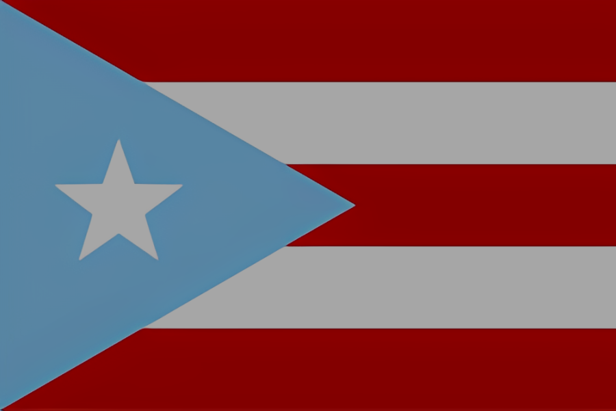

Piña Colada
Culinária de Porto Rico

HISTÓRIA
The Good Place é uma série de televisão de comédia fantasiosa criada por Michael Schur, um dos roteiristas e produtores de "sitcoms" mais influentes da TV americana. Ela estreou na NBC em 19 de setembro de 2016 e foi concluída em 30 de janeiro de 2020, após quatro temporadas e 53 episódios. No Brasil, foi transmitida pela Netflix. Saiba mais
PRATOS PRINCIPAIS
“Hilário, instigante e ridiculamente bobo, How to Be Perfect é uma ótima leitura para quem amou The Good Place - ou para quem quer ser uma boa pessoa.” — Jake Tapper, âncora da CNN
“Um guia divertido e barulhento para a vida moral. Se você quer se tornar moralmente melhor e não se importa em ser entretido no processo, você escolheu o livro certo.” —Jeff McMahan, professor de filosofia de Oxford
“Este livro ajudará a guiá-lo através dos enigmas morais mais espinhosos com clareza e hilaridade, e aumentará muito suas chances de acabar no... Bom Lugar.” —Kristen Bell
BEBIDAS
SOBREMESAS
“Hilário, instigante e ridiculamente bobo, How to Be Perfect é uma ótima leitura para quem amou The Good Place - ou para quem quer ser uma boa pessoa.” — Jake Tapper, âncora da CNN
“Um guia divertido e barulhento para a vida moral. Se você quer se tornar moralmente melhor e não se importa em ser entretido no processo, você escolheu o livro certo.” —Jeff McMahan, professor de filosofia de Oxford
“Este livro ajudará a guiá-lo através dos enigmas morais mais espinhosos com clareza e hilaridade, e aumentará muito suas chances de acabar no... Bom Lugar.” —Kristen Bell